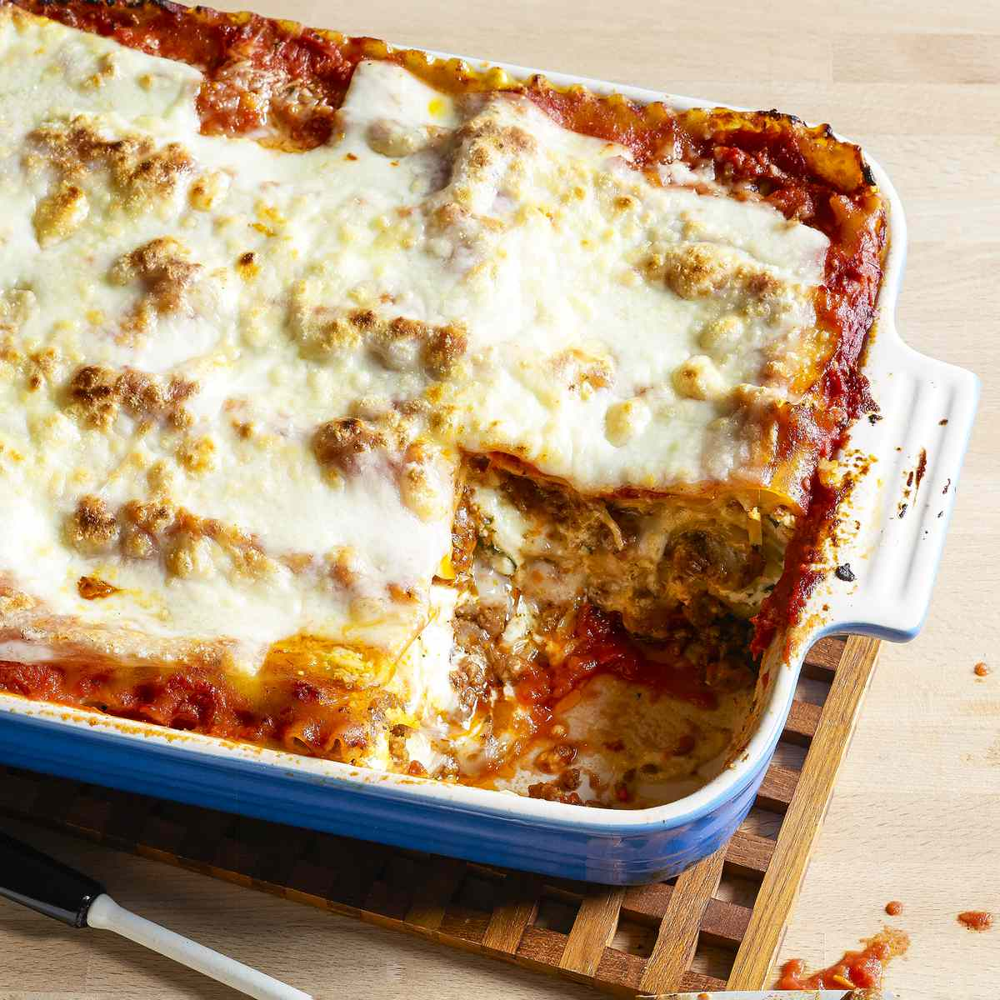

Lasagna

Description
Double the meat with both ground beef and Italian sausage. This will give you that extra flavoring from the Italian sausage but also the classic taste from the ground beef. Oh. SO. Good!! Tomato paste and tomato sauce are perfect combination for adding thickness, rich color and bringing in all the flavoring. Thick, wide lasagna noodles separates each layer and adds that soft buttery taste to the lasagna recipe.
Ingredients
- Olive oil: used for cooking the ground beef.
- Onion: added flavoring with the ground beef.
- Ground beef: sauté in a pan over medium heat until it is cooked through.
- Italian sausage: sautéed with ground beef for more meat and flavoring.
- Tomato sauce: has a sweetness and layers well with this tomato sauce.
- Tomato paste: gives it more thickness and rich tomato taste.
- Italian seasoning: brings the authenticity into the lasagna.
- Sugar: adds some sweetness for the tomato sauce and paste.
- Basil: flavorful seasoning
- Lasagna noodles: long, wide noodles that look like sheets.
- Ricotta cheese and Parmesan: mixed together making a spread over the noodles.
- Egg: aids in making a creamy sauce with the mixed cheeses.
- Mozzarella cheese: layered over top for extra melted cheese.
Steps
So simple! This classic lasagna recipe comes together quickly and easily. Simply sauté your meats together then add your tomato bases and seasonings. During this time you can also cook lasagna noodles until tender in boiling water. Once cooked set aside and combine ricotta cheese, parmesan and egg together. This will make a paste like cheese mixture to spread over the noodles.
- Sauté meat then simmer with bases and seasonings: In a large skillet over medium high heat add the olive oil and onion. Sauté until tender and add the ground beef and sausage. Cook and crumble until brown and cooked throughout. Add crushed tomatoes, tomato sauce, tomato paste, Italian seasoning, sugar, and basil. Let simmer on low heat.
- Cook lasagna noodles: In a large pot, bring the water to a boil. Add the lasagna noodles and cook for 8-10 minutes. Drain and rinse in cold water.
- Mix cheeses together: In medium sized bowl add the ricotta cheese, parmesan, and egg. Mix until incorporated.
- Prepare oven and pan: Preheat oven to 375 degrees and spray a 9x13 inch pan with non stick spray and set aside.
- Layering lasagna: To make the lasagna start by spreading 1 cup of the meat sauce on the bottom. Arrange the noodles in a single layer over the meat sauce. Spread ½ cup of the ricotta cheese, on top of the noodles followed by shredded mozzarella cheese. Repeat the layers and top with cheese.
- Cover and bake: Cover with aluminum foil and bake for 20 minutes. Remove the foil and bake and additional 20-25 minutes or until it is heated throughout and cheese is bubbly. Let it cool for 10 minutes before serving.
Go Back